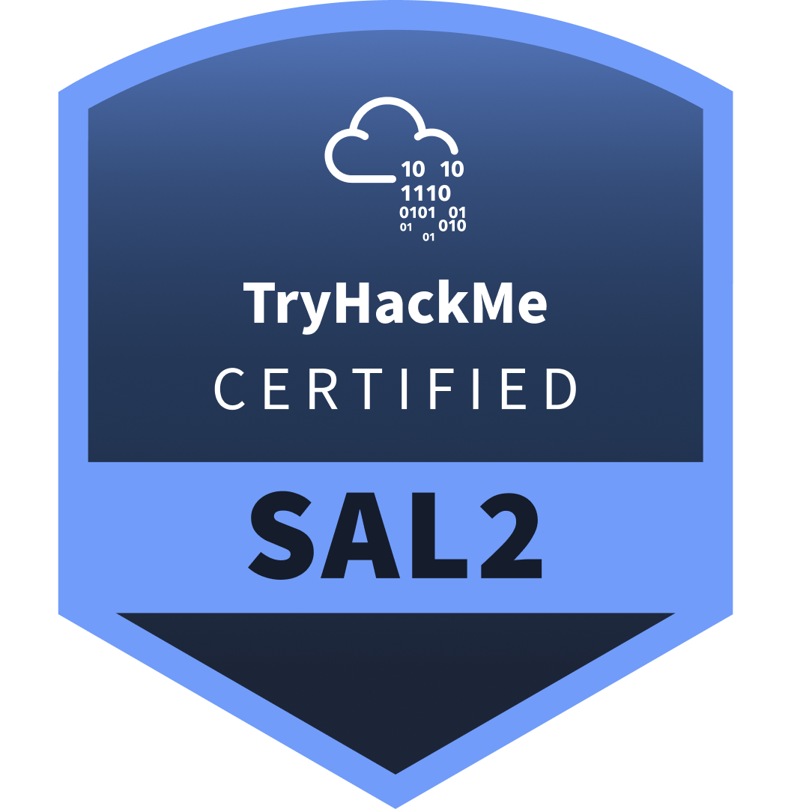

Florian Huyghe
Étudiant en Mastère Cybersécurité (Bac+4), je me spécialise dans la cyber défense et les activités SOC. Curieux et méthodique, je construis mes compétences en détection de menaces, analyse de logs et réponse à incident — sur le terrain en alternance et via des labs pratiques (TryHackMe, Top 1%).
À propos
Qui suis-je
Bonjour, je suis Florian Huyghe, 22 ans. Je suis actuellement en Mastère 1 Cybersécurité chez Ynov Campus Lille, en alternance chez Exaperf en tant que technicien informatique.
Passionné par la protection des systèmes d'information, j'ai construit des bases solides en Linux, Windows, réseaux et sécurité à travers mon alternance, mes projets personnels et des plateformes comme TryHackMe. Je souhaite aujourd'hui approfondir mes compétences en détection de menaces, analyse de logs et réponse à incident au sein d'une équipe SOC/VOC.
En dehors de l'informatique, je suis passionné de sports mécaniques (MotoGP, Tourist Trophy, F1), de nouvelles technologies (IA, creative coding, réalité augmentée) et d'audiovisuel (photo, cinématographie).
Parcours
Formation & expérience
Un parcours académique en cybersécurité, doublé d'une alternance technique depuis 2024.
-
Sept. 2025 — Présent
Mastère 1 Expert Cybersécurité
Ynov Campus Lille · Lille, France
Programme : pentest avancé, sécurité des infrastructures, audit & analyse d'incidents, gestion des risques, sécurité cloud.
Spécialisation : cybersécurité offensive & défensive.
-
Oct. 2024 — Présent
Technicien Informatique — Alternance
Exaperf — Informatique & Téléphonie · Avelin, France
Administration Active Directory, Windows Server & RDS, déploiement d'hyperviseurs, configuration Firewall / Switch / NAS.
Mise en place de solutions EPP / SIEM / XDR / EDR, support et résolution d'incidents utilisateurs.
-
Sept. 2024 — Juil. 2025
Bachelor 3 Cybersécurité
Ynov Campus Lille · Lille, France
Programme : pentest, sécurité réseaux, bases de données, DevOps.
-
Sept. 2023 — Mai 2024
Licence 2 Informatique
Université de Lille · Villeneuve-d'Ascq, France
Programme : POO (Java), SQL, PHP, JavaScript, C.
-
Sept. 2021 — Mai 2023
Licence SESI — Sciences Exactes & de l'Ingénierie
Université de Lille · Villeneuve-d'Ascq, France
Programme : Python, HTML5, CSS3, JavaScript natif. Spécialisation Mathématiques & Informatique.
Compétences
Boîte à outils
Offensive, défensive, infrastructure : une vision transverse de la sécurité des SI.
Blue Team & Défense
soc / vоc
Outils
Méthodologies & Techniques
Red Team & Offensive
offensive-security
Outils
Méthodologies & Techniques
Systèmes & Réseaux
infrastructure
Outils
Méthodologies & Technologies
Scripting & Automatisation
tooling
Langages & Outils
Compétences
Cryptographie
fondamentaux
Outils & Technologies
Concepts & Compétences
Cloud Security
cloud
Plateformes & Outils
Compétences
Langues & Soft Skills
savoir-être
Langues
Soft Skills
Formation continue
Au-delà des certifications déjà obtenues, ma trajectoire d'apprentissage se poursuit activement.
TryHackMe — Pre Security, Cyber Security 101, SOC Level 1, SOC Level 2
Hack The Box Academy — Parcours Fundamentals
Microsoft SC-500 — Security Operations Analyst Associate
Hack The Box Academy — CDSA (SOC Analyst)
TryHackMe — Parcours Intelligence Artificielle
Certifications
TryHackMe — Top 1%
Un parcours de certification progressif, de la découverte à l'analyse de sécurité niveau 2.
Pre Security (SEC0)
Fondamentaux réseaux, sécurité et systèmes d'exploitation.
13/03/2026
Cyber Security 101 (SEC1)
Bases de la cybersécurité offensive et défensive.
14/03/2026

Security Analyst Level 1 (SAL1)
Analyse d'alertes SOC, triage et investigation initiale.
18/04/2026

Security Analyst Level 2 (SAL2)
Chasse aux menaces avancée, corrélation d'alertes et réponse à incident.
02/07/2026
Projets
Mise en pratique
Des scénarios concrets, pensés côté attaquant comme côté défenseur.
CTF Red / Blue Team — Ynov Campus
Conception et mise en place d'un Capture The Flag destiné aux étudiants de 1ère et 2ème année, simulant une attaque réelle avec une approche double.
Côté Red Team : scénario d'intrusion réaliste. Côté Blue Team : détection, analyse des alertes et réponse à incident depuis un poste SOC.
Voir le projet en détail →14:02:11 Recon — scan Nmap sur le réseau étudiant 14:09:47 Exploitation — accès initial via service vulnérable 14:11:03 Alerte SIEM déclenchée côté Blue Team 14:14:52 Escalade de privilèges détectée 14:19:30 Confinement — isolation de la machine compromise > statut : incident contenu, rapport transmis ✓
Architecture réseau multi-site — pfSense
Conception et déploiement d'une architecture interconnectant plusieurs sites via des pare-feu pfSense : VPN site-à-site (IPsec), segmentation VLAN, règles de filtrage et supervision.
Home Lab — Proxmox
Environnement de virtualisation personnel pour l'entraînement : Active Directory, machines vulnérables, outils d'analyse réseau et simulation d'incidents.
Contact
Discutons
florian.huyghe.contact@gmail.com Téléphone
07 78 14 04 67 LinkedIn
Florian Huyghe TryHackMe
Flo.H Credly
florian-huyghe
En alternance, ouvert aux échanges
Actuellement en alternance chez Exaperf jusqu'à la fin de mon Mastère, je reste ouvert aux échanges, retours d'expérience et opportunités futures autour de la cybersécurité — en particulier SOC/Blue Team.
M'envoyer un email